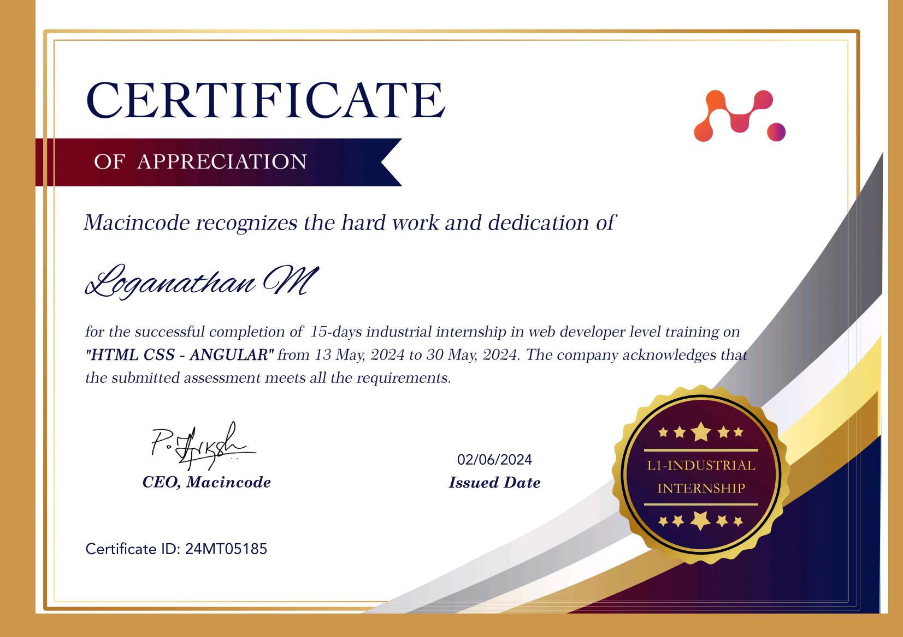
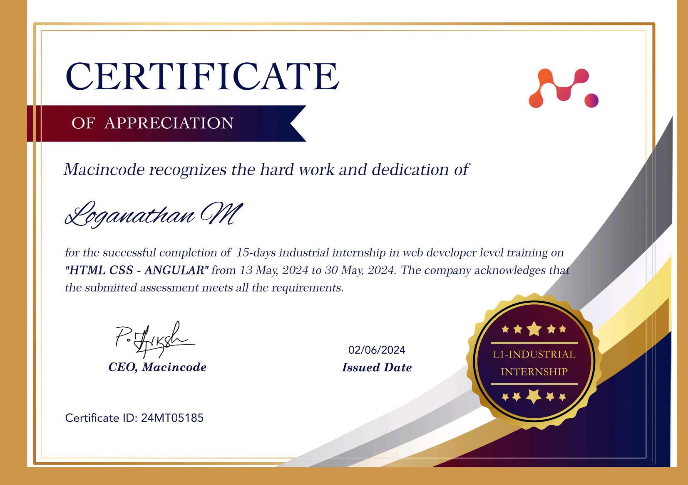
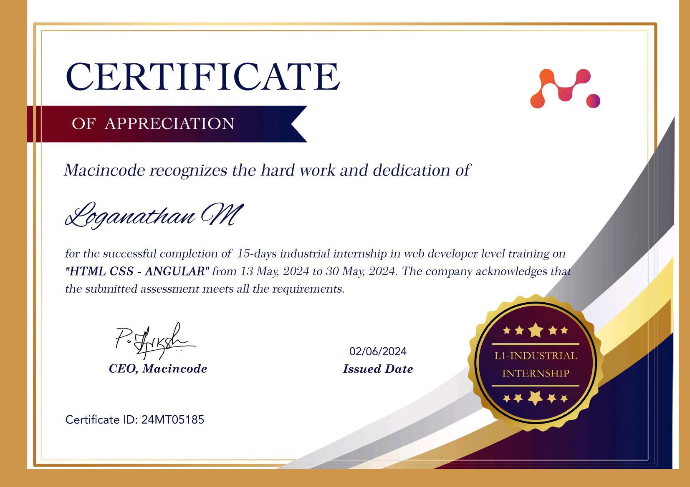

Certificates
 



I am a passionate and dedicated web developer with hands-on experience in creating responsive, user-friendly, and visually appealing websites. I enjoy transforming ideas into functional digital experiences using modern web technologies. Whether it's developing a personal portfolio, an e-commerce platform, or a fully customized business website, I take pride in writing clean, efficient code and delivering solutions that meet user and business needs. My passion lies in continuous learning and turning creativity into impactful web solutions.

Macincode Technologies Private Limited
May 2024
Completed a 15-day industrial internship in web development, actively participated in projects, and applied academic knowledge to practical, real-world scenarios.
ADOPLE AI
June 2024 - March 2025
Modified an existing template from the internet to create a modern, responsive website for ADOPLE AI.
Worked in various projects.
Government Arts College (Autonomous), Salem – 636007
September 2020 – May 2023
CGPA – 7.77
Government Arts College (Autonomous), Salem – 636007
September 2023 – May 2025
CGPA –
Motivated and enthusiastic individual seeking opportunities to learn, grow, and contribute meaningfully in both IT and non-IT environments. Actively exploring career paths in frontend development and data entry, with a strong interest in building technical and analytical skills. Eager to gain practical experience, receive mentorship, and showcase abilities through real-world projects. Committed to continuous personal and professional development with a strong work ethic and attention to detail.
Email: loganathanbcashift2@gmail.com
Phone: 9025475968